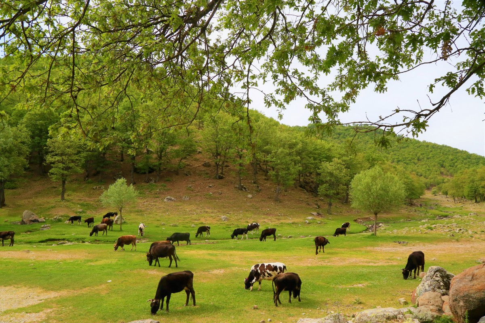

Los lagos
Los lagos son cuerpos de agua dulce que desempeñan un papel fundamental en los ecosistemas. Proveen agua potable, regulan el clima local y son el hogar de una gran variedad de flora y fauna.
En los lagos, encontramos especies como peces, ranas y aves acuáticas. Las plantas acuáticas, como los nenúfares, también son comunes y ayudan a mantener el equilibrio del ecosistema al proporcionar oxígeno y refugio.
Subtitulo
Los lagos también son importantes para las comunidades humanas, ya que ofrecen oportunidades para la pesca, el turismo y la recreación. Sin embargo, enfrentan amenazas como la contaminación y la sobreexplotación de recursos.
Es crucial implementar medidas de conservación para proteger estos ecosistemas. La educación ambiental y la gestión sostenible de los recursos son pasos clave para garantizar que los lagos sigan siendo una fuente de vida para las generaciones futuras.